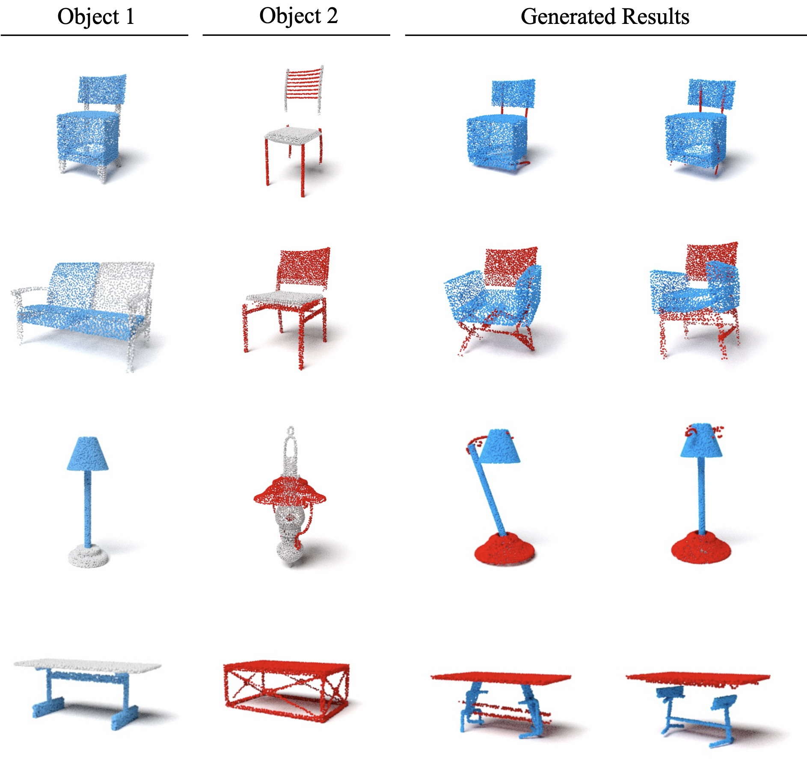
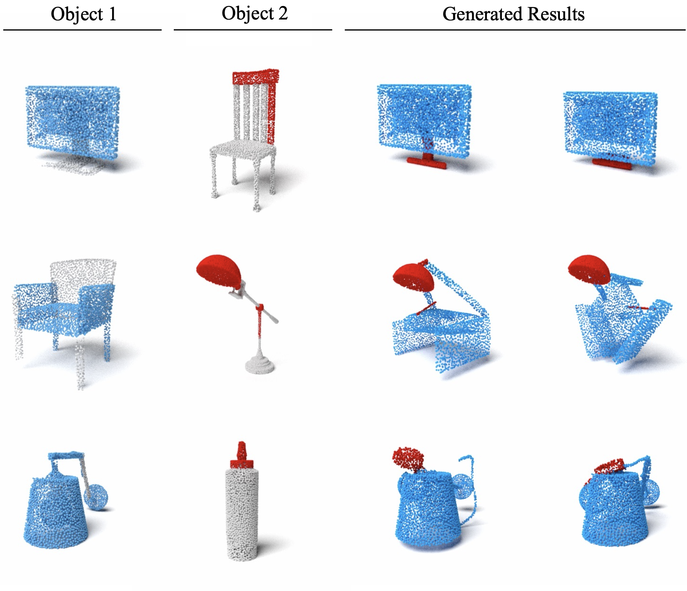

Register Any Point:
Scaling 3D Point Cloud Registration by Flow Matching
Accomplish single-stage multi-view point cloud registration by flow matching
Abstract
Point cloud registration aligns multiple unposed point clouds into a common frame, and is a core step for 3D reconstruction and robot localization. In this work, we cast registration as conditional generation: a learned continuous, point-wise velocity field transports noisy points to a registered scene, from which the pose of each view is recovered. Unlike previous methods that conduct correspondence matching to estimate the transformation between a pair of point clouds and then optimize the pairwise transformations to realize multi-view registration, our model directly generates the registered point cloud. With a lightweight local feature extractor and test-time rigidity enforcement, our approach achieves state-of-the-art results on pairwise and multi-view registration benchmarks, particularly with low overlap, and generalizes across scales and sensor modalities. It further supports downstream tasks including relocalization, multi-robot SLAM, and multi-session map merging.

Multi-part Shape Assembly
We evaluate our method on the multi-part shape assembly task, where the goal is to estimate the poses of multiple parts given their unposed point clouds.
Columns show objects with increasing number of parts (left to right). Rows display (1) colored input point clouds of each part, (2) GARF outputs (dashed boxes indicate samples limited to 20 by GARF’s design, selecting the top 20 parts by volume), (3) Rectified Point Flow outputs, and (4) ground-truth assemblies. Compared to GARF, our method produces more accurate pose estimation on most parts, especially as the number of parts increases.
Linear Interpolation in Noise Space
We visualize the linear interpolation in the noise space by generating the assembled point cloud from \( Z(s) \), where \( Z(s) \) interpolates linearly between two Gaussian noise vectors \( Z_0 \) and \( Z_1 \). We observe a continuous, semantically meaningful mapping from Gaussian noise to valid assemblies.
Part Interchanging
Structural Changing
Generalization to Unseen Assemblies
Parts from Same Categories
We test the model’s ability to generalize to unseen assemblies composed of parts from two different objects within the same category. Our results show that the model captures the underlying geometry of the category and can successfully re-target parts to construct a coherent shape belonging to that category.
Parts from Different Categories
Surprisingly, our method can also generalize to certain parts from different categories, which is particularly challenging. This indicates that the model can reason about part compositionality and re-target parts to produce a plausible final shape, even when some parts originate from completely different categories.
Concurrent Works
We are pleased to see several concurrent works that explore flow matching for pose estimation. Check them as well!
- GARF: Learning Generalizable 3D Reassembly for Real-World Fractures
combines fracture-aware pretraining with a flow matching model to predict SE(3) poses for parts.
- Equivariant Flow Matching for Point Cloud Assembly handles part symmetry like ours, but with a proposed equivariant flow model working on top of an SE(3)-equivariant encoder.
BibTeX
@inproceedings{sun2025_rpf,
author = {Sun, Tao and Zhu, Liyuan and Huang, Shengyu and Song, Shuran and Armeni, Iro},
title = {Rectified Point Flow: Generic Point Cloud Pose Estimation},
booktitle = {Advances in Neural Information Processing Systems (NeurIPS)},
year = {2025},
}